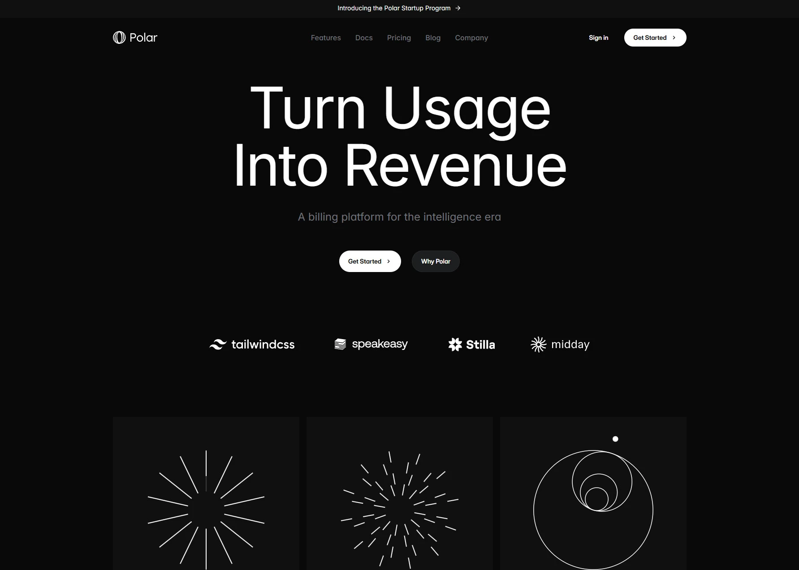

Polar
- Лендинг
- Сервисы и приложения
- Финансы и банки
- Финтех
- Инструменты разработчика
- Разработчикам
- Продуктовым командам
- Минимализм
- Утилитарный техно
- Тёмная тема
- Нейтральный фон
- Скроллителлинг
- Микроанимации
- Визуализация данных
- Next.js
- React
- Turbopack
- Английский язык
- США
- Действующий сайт

Что это
Лендинг Polar — Merchant of Record для разработчиков ИИ-продуктов. На чёрном фоне огромное «Turn Usage Into Revenue», под ним — описание биллинга и расхода токенов, логотипы клиентов и три тонких линейных иллюстрации. Дальше — продукт: приём событий, метры, usage-биллинг, кредиты и анализ затрат. Чистый тёмный лендинг биллинг-платформы для ИИ-продуктов.
Что смотреть в первую очередь
Смотреть огромный заголовок и тонкие линейные иллюстрации, затем — блоки про метры, usage-биллинг и кредиты.
Приёмы
- Скроллителлинг
- Микроанимации
- Визуализация данных
Интересные факты
- Сверху узкая полоса Polar Startup Program, затем минимальная шапка с Features, Docs, Pricing, Blog, Company и кнопкой Get Started.
- Первый экран — огромное «Turn Usage Into Revenue» на чёрном; подзаголовок «A billing platform for the intelligence era».
- Ниже логотипы клиентов tailwindcss, speakeasy, Stilla и midday, а под ними три тонкие линейные фигуры — звезда, вспышка и спираль.
- Дальше лендинг показывает продукт: входящие события, метры, usage-биллинг, кредиты и анализ затрат.
- Отдельно упомянуто, что ИИ-агенты могут сами зарегистрироваться в Polar по инструкции в auth.md.
- Собрано на Next.js с Turbopack; в structured data указан офис Polar Software, Inc. в Сан-Франциско.
Паспорт
- Домен
- polar.sh
- Тип сайта
- Лендинг
- Категории
- Сервисы и приложения, Финансы и банки
- Подкатегории
- Финтех, Инструменты разработчика
- Для кого
- Разработчикам, Продуктовым командам
- Стиль
- Минимализм, Утилитарный техно
- Язык
- Английский
- Страна
- США, Сан-Франциско
- Автор
- Polar Software, Inc.
- Год
- 2026
- Добавлен в коллекцию
- 23.11.2026
Палитра
-
#0A0A0A— 96% кадра -
#FBFBFB— 2% кадра -
#2D2E2F— 0% кадра -
#666667— 0% кадра -
#D1D1D1— 0% кадра
- Режим
- Тёмная
- Цвет фона
- Нейтральный
Технологии
- Next.js
- React
- Turbopack